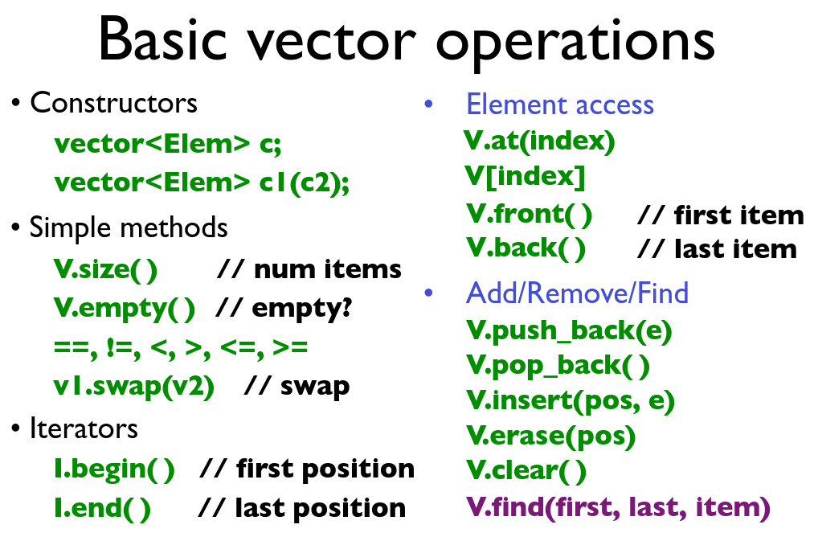
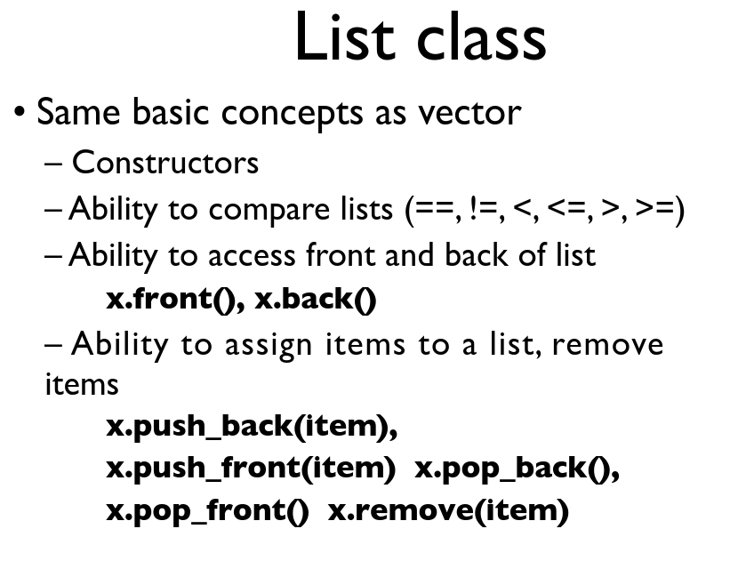

C++ 基础知识
C++是一个强大的语言，其中包含的很多程序设计的思想值得学习。请千万不要在程序里出现裸new，用智能指针包裹他们！
- C++语言基础 8学时
- 更好的C ✔️
- const ✔️
- 引用 ✔️
- 函数原型
- 内联函数 ✔️
- 缺省自变量 ✔️
- 重载 ✔️
- 类和封装 ✔️
- 私有、保护和公共 ✔️
- 构造函数和析构函数 ✔️
- 友元 ✔️
- 类中的运算符和函数重载
- 派生 ✔️
- 虚函数和多态性 ✔️
- 流 ✔️
- 第三部分 面向对象的软件开发 6学时
- 传统的软件开发方法
- 面向对象模型
- 面向对象设计与实现
- 典例实例剖析
- 第四部分C++的高级论题 10学时
- 模板和异常处理
- 拷贝构造函数与参数传递
- 常量约束
- 虚析构函数
- 重载时参数匹配顺序
- 静态成员
- 临时对象的构造和撤消
Better C
很久之前C++是C的超集，不过经过十几年的发展现在从C++已经不能完全兼容C了。
不过运算符那些东西和C都是一样的。
我们在C语言里一般用stdio.h，在C++用流iostram
- 文件输入流
ifstream - 文件输出流
ofstream - 标准输入流
cin - 标准输出流
cout
#include <iostream>
#include <fstream>
using namespace std;
int main()
{
ofstream FileA("./hello.txt");
ifstream FileB("./CMakeLists.txt");
string str="Hello world";
FileA << str << endl;
FileB >> str;
cout << "Str= " << str << endl;
return 0;
}
我们在C语言里用的字符数组，在C++里多了一个选择——string
除了和C语言一样的循环，C++11还有一种枚举循环。这个
#include <iostream>
int main()
{
char s[]="hello world!";
for (auto x:s) //拷贝
{
std::cout << x;
}
for (auto &x:s) //引用
{
std::cout << x;
}
}
static
对于全局变量，局部变量，全局函数，和C语言是一样的。需要注意的是，函数的局部变量在语义上只会初始化一次，全局类的构造函数和析构函数也只会调用一次。至于具体是怎么实现的？
对于class的成员变量来说，Shared by all instance。静态成员的定义应该放在cpp文件中。静态成员变量不能在初始化列表中初始化，因为他不是普通的成员变量。不过也没有人会在这里初始化吧，直接在定义的地方初始化就好了。
类似的，如果data是private的话，外部也是不能访问的。令人迷惑的是，如果外部可以访问，（实例）a.data和（类）A::data都是合法的用法，但是显然第二个语义表达的更清楚。
对于class的方法来说，也是Shared by all instance，但是只能访问全局变量，因为参数中没有默认的self指针。
// Demo:
// 静态的东西都是属于类而不是属于实例的，整个程序只有一份
class A
{
static int k; //静态变量需要在类中定义
public:
static int get_k(){ //静态函数
//静态函数是没有self的，所以里面使用的变量只能是静态变量，不能是类里面的变量
return k;
}
};
int A::k = 555; //必须在*外部*显式的初始化
void main(){
A a;
cout << a.get_k() << endl;
cout << A::get_k() << endl;
}
| static修饰 | 无static修饰 | |
|---|---|---|
| 方法 | 外部访问性受修饰符影响。 实际上全局也只有一个代码。没有默认的this指针，所以不能访问类变量。 可以用类或实例访问。 | 外部访问性受修饰符影响。 实际上全局也只有一个代码。其实第一个参数是隐含的this指针。 可以用实例访问。 |
| 变量 | 外部访问性受修饰符影响。 可以理解为在类命名空间下的静态变量（可以用类实例来访问他）；必须要在外面初始化。全局只有一个。 可以用类或实例访问。 | 外部访问性受修饰符影响。 每一个类的实例都有一个变量。 可以用实例访问。 |
Reference
引用是C语言里不存在的概念。 引用变量是一个别名，也就是说，它是某个已存在变量的另一个名字。一旦把引用初始化为某个变量，就可以使用该引用名称或变量名称来指向变量。 引用很容易与指针混淆，虽然他们在原理上有相似之处。在使用的时候，它们之间有三个主要的不同：
- 不存在空引用。引用必须连接到一块合法的内存。
- 一旦引用被初始化为一个对象，就不能被指向到另一个对象。指针可以在任何时候指向到另一个对象。
- 引用必须在创建时被初始化。指针可以在任何时间被初始化。
- 没有引用的引用。不可以有指针指向引用。不过指针可以有引用。
例子，指针用*号，引用用&号。
// 声明简单的变量
int i;
double d;
// 声明引用变量
int& r = i;
double& s = d;
//常见用法
int& inc(int& x){
x++; //如果调用inc(var),那么var确实+1了。
return x; //引用类型是可以返回的，但是不要把局部变量返回了。
}
非常量引用的初始值必须为左值。其实可以用指针的角度去思考这个问题。为什么const int&就可以了呢？因为他不是左值。
在实现上，其实编译器为i*3找了一个栈上的临时空间来存放他，3也是同理。仔细一想，这样也合乎逻辑。
int i;
int& r1 = i;
int& r2 = i*3; //非法，i*3不是合法的左值。i*3的地址在哪里？
int$ r3 = 3; //非法，3不是合法的左值。3的地址在哪里？
const int& cr1 = i*3; //合法，创建了一个临时空间
const int& cr2 = 3; //合法，创建了一个临时空间
引用的大小是固定的，和指针一样。所以很适合大对象的参数传递。他和指针在本质上差别不大，所以能用引用的地方大都能用指针，指针更加灵活。
Inline
Inline Function是为了避免调用函数的额外开销，会“原地展开”
- inline使用限制：inline 的使用是有所限制的，inline 只适合涵数体内代码简单的涵数使用，不能包含复杂的结构控制语句例如 while、switch，并且不能内联函数本身不能是直接递归函数（即，自己内部还调用自己的函数）
- inline仅是一个对编译器的建议：inline 函数仅仅是一个对编译器的建议，所以最后能否真正内联，看编译器的意思，它如果认为函数不复杂，能在调用点展开，就会真正内联，并不是说声明了内联就会内联，声明内联只是一个建议而已。
- 建议 inline 函数的定义放在头文件中：其次，因为内联函数要在调用点展开，所以编译器必须随处可见内联函数的定义，要不然就成了非内联函数的调用了。所以，这要求每个调用了内联函数的文件都出现了该内联函数的定义。内联函数是weak symbol，所以不会出现重复定义的问题。
Const
compile time constant 和 run-time constant const：默认只能在当前的编译单元之间使用。因为编译器可能会把const直接替换成常数，所以我们通常把他放到头文件中，internal linkage才不会引起错误。 extern const可以跨越这个限制。
char * const q =" abc"; //你不能用一个变量指针指向一个常量，比如下面的第一种情况。
int const *q = x; //你不能修改q
const char * p = "ABC"; //你不能通过p去修改指向的内容
char const * p = "ABC"; //你不能通过p去修改指向的内容，和上面一样
传递对象但是不想改动他，可以：
- 直接传值，但是对大结构不友好，浪费栈空间。
- 传指针，用const修饰
- 传引用，用const修饰（引用和指针一样大小）
有时我们把我们的instance声明为const，不希望他的数据被修改。 但是在调用类方法的时候，我们怎么知道数据会不会被修改呢（因为我们在编译的时候，可能还不知道函数的具体实现，只有函数的声明.h文件，所以编译器无法帮我们检查） 我们可以通过把方法限定为const表示该函数不修改内部数据，能加上const的地方就加上const是好的编程习惯。不过const是会“传染”的，处理遗留代码会很麻烦。
- 被const修饰的函数不能修改内部的数据。
- 被const修饰的函数不能调用非const修饰的函数。
class A{
public:
void foo(){ //本质：void foo(A *this)
cout << "foo" << endl;
}
void foo() const{ //本质：void foo(const A* this)，所以相当于一个函数的重载
cout << "const foo" << endl;
}
}
const还可以用来修饰函数：
函数前const：普通函数或成员函数（非静态成员函数）前均可加const修饰，表示函数的返回值为const，不可修改。格式为：
const returnType functionName(param list)
函数后加const：只有类的非静态成员函数后可以加const修饰，表示该类的this指针为const类型，不能改变类的成员变量的值，即成员变量为read only，任何改变成员变量的行为均为非法。此类型的函数可称为只读成员函数，格式为：
returnType functionName(param list) const
Encapsulation with Class ⭐️
C++的类，我觉得可以用struct来理解。class和struct差别不大（或者说在本质上是一样的）。不过Struct的所有东西都默认是Public的，Class里的所有东西默认是Private的。这个和Python是不同的。Python的object更像是一个指针或者说类的引用，指向真正的内容。而C++的类就是真正的内容，不过类里面可能有指针指向堆里的数据。 一个demo：
class Vector
{
public:
//这是类的构造函数
//这个冒号的特性是使用初始化列表来初始化字段
Vector(int s):elem(new double[s]), sz(s)
{
}
//重载了[]运算符
double& operator[](int i)
{
return elem[i];
}
//一个普通的接口
int size()
{
return sz;
}
//私有变量
private:
double* elem;
int sz;
};
int main()
{
Vector arrow = Vector(2);
arrow[1]=1;
std::cout << arrow.size() << std::endl;
std::cout << arrow[0] << std::endl;
std::cout << arrow[1] << std::endl;
return 0;
}
我们还没有提供一种机制来delete我们的elem。这个需要通过析构函数来完成。虽然会提供默认的析构函数，但是new和delete一定是成对出现的，自己new的东西肯定要自己delete。也没有错误处理。
我们的arrow变量是一个handler。一般来说，我们把变量作为private，把提供的接口作为Public。
我们在使用a.size的时候，其实编译器帮我们把arrow的地址作为指针当作第一个参数传了进去(this)，底层还是一个函数。换句话说，表面上是int size()，实际上是int size(Vector *this)。
每个instance的变量是各不相同的，但是函数是相同的。
this
在 C++ 中，每一个对象都能通过 this 指针来访问自己的地址。this 指针是所有成员函数的隐含参数（第一个参数，在这一点上和Rust是类似的）。因此，在成员函数内部，它可以用来指向调用对象。 对于我们来说，this 形参是隐式定义的。实际上，任何自定义名为 this 的参数或变量的行为都是非法的。我们可以在成员函数体内部使用 this，因此尽管没有必要（如果局部变量、函数参数隐藏了类变量就有必要了）。
Constructor&Destructor
和内存存在着千丝万缕联系的函数，书写的时候要非常小心。如果里面有裸new和裸delete，建议把默认的函数全部禁止了：
- 构造函数：对象会有一个默认的构造函数，是没有参数的。
- C++有一个Initializer list的语法糖，帮我们简单的书写初始化。并且还有更多的好处，可以给const变量、引用赋初值，是工程的最佳实践。
CExample(): a(0),b(8.8) { }比如这是一个初始化函数，函数体为空。
- C++有一个Initializer list的语法糖，帮我们简单的书写初始化。并且还有更多的好处，可以给const变量、引用赋初值，是工程的最佳实践。
- 析构函数：当对象的生存周期结束的时候，对象的析构函数会被调用。编译器会帮你在后面插入析构函数。
class X {
public:
X(Sometype); // ordinary constructor: create an object
X(); // default constructor
X(const X&); // copy constructor
X(X&&); // move constructor
X& operator=(const X&); // copy assignment: clean up target and copy
X& operator=(X&&); // move assignment: clean up target and move
˜X(); // destructor: clean up
There are five situations in which an object is copied or moved:
- As the source of an assignment
- As an object initializer
- As a function argument
- As a function return value
- As an exception
// move语义是新标准的东西，我也不太懂
// 编译器默认的copy assignment是 bitwise的拷贝，和下面的行为是一致的，也就是说我其实可以不用写
#include <iostream>
using namespace std;
class X
{
public:
int a;
X(int _a): a(_a) {
cout << "X()" << endl;
};
X(const X& x) {
cout << "X(const X&)" << endl;
this->a = x.a;
};
X& operator=(const X&){
cout << "X& operator=(const X&)" << endl;
return *this;
}
~X(){
cout << "~X()" << endl;
};
};
int main()
{
X x(1),z(1);
X y = x; // copy constructor
z = y; // copy assignment
cout << x.a << " " << y.a << " " << z.a << endl;
}
参考链接-深拷贝和浅拷贝。类对象默认的copy是浅拷贝，对于一些简单的类，这是没有什么问题的。但是对于内部存在指针的类，问题就大了。如果内部有别的对象，通过组合的方式结合在一起，其实我们不用为此写一个copy constructor，默认的行为是正确的。
类对象的拷贝操作可以通过两个成员来定义拷贝构造函数( copy constructor )**与**拷贝赋值运算符( copy assìgnment )。
Vector::Vector(const Vector& a) : copy constructor
Vector& Vector::operator=(const Vector& a) : copy assignment
把这两个函数重载成你需要的拷贝方法，比如deep copy。
你写了构造函数，不过其实编译器会扩展构造函数做更多的事情，顺序如下：
- 所有的 virtual base class constructors 必须被调用，从左到右，从深到浅。并同时设置好 virtual base class 所需要使用的各种机制。
- 所有的上一层的 base class construcotrs 必须被调用，以 base classes 声明的顺序。使用 member initialization list 或者调用默认构造函数，同时如果 base class是多重继承下的非第 1 基类，还需要调整 this 指针。
- 如果 class object 有 vptr，它们必须被正确的设置。
- 初始化成员列表：使用 member initialization list 或者调用默认构造函数。
- 你自己写的构造函数内容。
析构函数也是会被扩展。
- 如果 object 内带有 vptr，那么首先重设相关的 vtable；
- 你自己写的destructor 函数本身现在会被执行， 也就是说 vptr 会在程序员的代码执行之前被重设。
- 以声明顺序的相反顺序调用 members 的析构函数。
- 如果有任何直接的（上一层）nonvirtual base classed 拥有 destructor，那么会以其声明顺序的相反顺序被调用。
- 如果有任何 virtual base classes 拥有 destructor，而当前讨论的这个 class 是最尾端的，那么它们会以其原来的构造顺序的相反顺序被调用。
New&Delete
参考链接
动态内存操作：C++提供了new和delete两个关键字。
new会开辟一块内存，delete会释放一块内存。
那难道和malloc和free一样吗？
如果new一个class，会调用类的构造函数constructor；如果delete一个class，会调用类的析构函数destructor。
更准确的说，new的时候先开辟一块内存，再调用constructor；delete的时候先调用类的destructor，再释放那块内存。
正确的编写destructor，是程序正确的关键。可能要关闭打开的文件，释放锁，释放过程中开辟的内存等工作。更关键的是，要记得delete。
在new的时候，会额外开辟一些空间存一些metadata，存储在真正数据的前面，解决下面注释中提到的问题。
int main()
{
int *pa = new int(101);
int *parr = new int [10];
int *pstr = new String[16];
delete pa;
delete []parr;
delete []pstr; //没有把16传递进去，怎么知道要清理几次呢？
}

在64位系统中前面开辟8字节
所以我们有两种方式创建一个Object：一个是new，另一个是用RAII（资源获取即初始化）。他们的区别在于：
- new出来的东西是存在heap中的。自己new出来的东西自己要去delete/delete[]。
- RAII的内容保存在栈上。这样，当函数结束，变量生命周期结合素，堆栈被释放，析构函数会被编译器自动调用。或者更准确的说，在C++中，一个被
{}包裹的部分是一个automatic storage。当{}内的语句执行完成后，里面的资源被自动释放。这通常是最佳实践。不过你懂得，有时候还是要用heap的，比如大量内容的保存和更长的生命周期。这个时候我们最好用智能指针。
#include <iostream>
class Vector
{
private:
int num;
public:
Vector(int s):num(s){
std::cout << "Vector Constructor" << std::endl;
}
};
int main()
{
Vector arrow = Vector(2); //RAII
Vector* arrow_stack = &arrow;
Vector* arrow_heap = new Vector(2); //new
return 0;
}
看Allocator代码才知道new还有别的用法：
-
基本的new：
A *obj = new A();使用 new 创建对象，分配了空间并调用了构造函数。其实 C++ 规定 new 的这两个功能分开实现：- 分配空间： 调用函数 operator new 来实现。
- 调用构造函数： 调用 placement new 来实现。
-
operator new 如
::operator new(sizeof(T)*n)，这个就是单纯的分配空间 -
placement new 的功能就是 在一个 已经分配好的空间上，调用构造函数，创建一个类。
void *buf = // 在这里为buf分配内存 Class *pc = new (buf) Class();
与之对应的也有不同的delete
- 基本的delete，先调用析构函数然后释放空间
- operator delete，和operator new对应，释放分配的空间
::operator delete(buffer) - 不需要和placement new对应的delete，直接调用析构函数就行了
Default Arguments
默认参数，在函数原型的时候为形参分配默认参数。如void showArea(double length = 20.0, double width = 10.0);。编译器如果发现你提供的参数少了，就会帮你把默认参数传进去。所以在函数定义的时候不需要说默认参数。另外，默认参数的位置必须在右边。默认参数是不推荐使用的，最佳的工程实践应该是用函数重载来实现这个功能。
Overload
相同的函数名，但是不同的函数传入参数类型。然后编译器会给每一个函数分配一个唯一的奇怪的名字（取决于具体的编译器）。 另外，C++中的函数签名(function signature)：包含了一个函数的信息，包括函数名、参数类型、参数个数、顺序以及它所在的类和命名空间。
函数的重载是一种静态的多态性。编译器会帮你选择正确的（参数表和传入参数类型最匹配）函数。
有时候，你传入的参数类型让编译器无法抉择应该使用哪一个函数，就会报错。最佳的工程实践，应该是让传入的参数和函数参数表完全匹配，而不是依赖编译器的隐式转换。
子类会隐藏父类的所有同名函数，即使参数不同。
Inheritance-private,protect,public
如果两个对象是继承关系，那么子类是父类更特殊的推广。经常举的例子是Shape和Rectangle。
class Derived : public Base
{
//会把Base Class中所有的方法、变量都继承下来，包括构造函数、析构函数
//Base Class中的private方法，对于Derived Class也不能访问， 还有friends
//protected方法，对于Derived Class可以访问，但是对外部来说是不可见的， 还有friends
//public方法，都可以访问
}
| Public继承中的Accessibility | private members | protected members | public members |
|---|---|---|---|
| Base Class | Yes | Yes | Yes |
| Derived Class | No | Yes | Yes |
| Outer | No | No | Yes |
我们要初始化基类的内容要怎么办呢？最佳实践是在初始化列表中加入基类
123事实上，我们会先调用Base的构造函数，再调用Derived的构造函数;
构造函数中初始化的顺序取决于变量定义的，顺序而不是初始化列表的顺序。
Derived(value,...): attr(value), Base(...) {};
Name hiding：如果在Derived Class编写了一个函数，那么Base Class中所有的同名函数都会被隐藏，即使参数列表不同。如果需要调用的话，要用Base::function显式声明要调用的函数。
friend关键字。可以用用他来指定可以作为friend的东西，被friend修饰的东西就可以访问private的东西了。他是破坏了封装的准则的，要慎用。
//class 默认是private, struct默认是public
struct X{
private:
int i;
public:
friend struct Z; //可以是某个变量
friend void Fri::h(); //可以是别的类的函数
friend void glo(); //可以是全局函数
}
最开始的例子可以猜到，其实继承也是有public, private, protected 之分的。但是一般用的都是public，后面两个基本上不怎么用。
| 继承方式 | 基类的public成员 | 基类的protected成员 | 基类的private成员 | 继承引起的访问控制关系变化概括 |
|---|---|---|---|---|
| public继承 | 仍为public成员 | 仍为protected成员 | 不可见 | 基类的非私有成员在子类的访问属性不变 |
| protected继承 | 变为protected成员 | 变为protected成员 | 不可见 | 基类的非私有成员都为子类的保护成员 |
| private继承 | 变为private成员 | 变为private成员 | 不可见 | 基类中的非私有成员都称为子类的私有成员 |
另外，在继承中，构造函数调用顺序：先基类，后子类；析构函数调用顺序：先子类，后基类。
| - | 作用域 | 函数名 | 参数 | 返回值 |
|---|---|---|---|---|
| 重载 | 相同 | 相同 | 不同 | 不影响 |
| 覆盖 | 子类和父类 | 相同 | 相同 | 相同 |
| 隐藏 | 重叠（包括子类和父类） | 相同 | 不同 | 不影响 |
多继承：别用，除非是全是虚函数的接口。
Polymorphism-virtual function
https://bbs.pediy.com/thread-221160.htm
通过添加这个virtual，我们可以只用foo方便的调用到每个类型上正确的函数。virtual的意思是：当通过基类的指针或者引用调用该成员函数时，将根据指针指向的对象类型确定调用的函数，而非指针的类型。
可以试着把virtual去掉，会发现调用的都是Shape.render()，是一个静态绑定。另外，实际上我们只需要在基类上写上virtual。
如果一个类有虚函数，编译器会自动为这个类型的对象在头部增加一个虚表指针（vftable），指向虚函数表。虚函数表中存放着一个个的虚函数的地址。每一个类的实例上都多了一个虚表，增加内存代价，然后调用的时候也多了一层，间接调用。
注意，base = derive是合法的，但是这个copy是不会把上面提到的vptr复制过去的，所以base.xxx调用的还是基类的方法。
记住一个点，如果想利用多态性的话，基类的析构函数必须是virtual的。为什么呢？因为否则的话你用基类指针接住子类，调用这个指针指向的析构函数如果没有virtual的帮助的话会调用基类析构函数而不是本来应该调用的子类析构函数。你不要假设类的使用者不会这么做，你会很痛苦的。
class Shape{
public:
virtual void render() = 0; //纯虚函数
virtual ~Shape() {...} //基类的析构函数肯定是virtual的。
}
class Ellipse : public Shape {
public:
void render() override{...}
}
class Circle : public Ellipse{
public:
void render() override{
Shape::render(); //重用父类的代码
...
}
}
void foo(Shape* ptr){
ptr->render();
}
int main(){
Ellipse e;
Circle c;
foo(&c);
foo(&e);
}
//离开作用域后会调用c,e的虚构函数，应该是编译器帮我们加上的，在出栈的时候？
//智能指针 unique_ptr 可以帮你管理内存
纯虚函数：比如上面的Shape，它其实是一个抽象的概念，我们没法实现他的render。我们不应该去写他，所以我们把他变成一个纯虚函数。有纯虚函数的类，是抽象类，是不能实例化的。纯虚函数的子类应该去实现纯虚函数，否则也不能实例化。
类型转换 Up-casting
Derive Base
Derive&=>Base&
Derive*=>Base*
动态绑定和静态绑定
关于继承和虚函数的底层实现内存布局，在另一篇Blog C++Q&A中有解释。
operator overloading
可以重载的运算符。不过优先级是无法改变的，操作数个数(如果是member function要算上this)也是无法改变的。也就是说我们应该尽量维持他们的语义。如果C++中本身不存在的运算符也是无法添加的。
| + | - | * | / | % | ^ |
|---|---|---|---|---|---|
| & | | | ~ | ! | , | = |
| < | > | <= | >= | ++ | -- |
| << | >> | == | != | && | || |
| += | -= | /= | %= | ^= | &= |
| |= | *= | <<= | >>= | [] | () |
| -> | ->* | new | new [] | delete | delete [] |
运算符重载的本质就是函数重载，operator运算符()。
// 第一种写法，写成member function。
// 推荐单目运算符使用，[] () = 必须用
// 后面的const表示函数是一个常量函数，不会更改this的状态
Complex operator+ (Complex const &obj) const{
Complex res;
res.real = this->real + obj.real;
res.imag = this->imag + obj.imag;
return res;
}
语义： x+y ===> x.operator+(y)
// 第二种写法，写成global function，没有了默认的self变量
// 推荐双目运算符使用，看起来清楚一点
// 要访问类内部的数据，所以用上了friend
// 通过friend修饰可以访问私有变量
class Complex {
private:
int real, imag;
public:
Complex(int r = 0, int i =0) {real = r; imag = i;}
friend Complex operator+ (Complex const &, Complex const &);
}
Complex operator+ (Complex const &c1, Complex const &c2)
{
return Complex(c1.real + c2.real, c1.imag + c2.imag);
}
语义： x+y ===> operator+(x,y)
注意：
E& T::operator[] (int index)返回的是引用++和--让人迷惑。T& operator++()是prefix++，T operator++(int)是postfix++。这个int是一个占位符。- 运算符之间往往是联系很大的，你要合理的重用他们避免代码重复。比如
!=和==，>和<=，<和>=；+=和++。 - 类型强制转换运算符是单目运算符，也可以被重载，但只能重载为成员函数，不能重载为全局函数。
operator double();这是一个对double强制类型转换的重载。 - 赋值运算符
=，Be sure to assign to all data members: pointers... Checkfor self-assignmentif (this!= &rhs).
stream
C语言其实已经有完善的I/O了，那么我们为什么还需要stream呢？
- stream是类型安全的。
- 可以对自己定义的类，重载流输入输出符号。可扩展性高。
- 更加面向对象。
但是对格式化输出不友好(std::format comes back in C++20,但是还没有编译器支持；有很多第三方库也支持格式化输出)。流可能会更慢。
| Input | Output | Header | |
|---|---|---|---|
| Generic | istream | ostream | iostream |
| File | ifstream | ofstream | ifstream |
| C string | istrstream | ostrstream | strstream |
| C++ string | istringstream | ostringstream | sstream |
Extractor>>, Inserter<<, Manipulator.
<<：对于基本类型都已经定义好了。默认是忽略前导的whitespace的。我们可以为我们的类型自己重载这个运算符。>>也是。
// 声明 通过friend可以访问私有变量
friend std::ostream &operator<<(std::ostream &output, const Fraction &D);
friend std::istream &operator>>(std::istream &input, Fraction &D);
// 定义，注意这个不是类方法，是没有默认的self变量的
std::istream &operator>>(std::istream &input, Fraction &D)
{
input >> D.numerator >> D.denominator;
return input;
}
std::ostream &operator<<(std::ostream &output, const Fraction &D)
{
output << D.to_string();
return output;
}
// 自定义Manipulator的例子
ostream& tab(ostream& out){
return out << '\t';
}
除了流，我们还有更精细的对输入的控制：
- 其他的函数
get()- ``getline()`
- cout.flash()`：刷新缓冲区，会把缓存中的东西都写出去。
- manipulator可以控制流的状态。我们也可以自定义manipulator。
- endl：换行，刷新缓冲区
- hex：
- setprecision(2)：控制输出的精度
- setw(20)：
- stream flag
composition
表示“has a”的关系。比如car has a engin/windows 一个优秀的composition应该满足
- The part (member) is part of the object (class)
- The part (member) can only belong to one object (class) at a time
- The part (member) has its existence managed by the object (class)
- The part (member) does not know about the existence of the object (class) 包含的方法，通过对象是不是能管理包含内容的生命周期决定要选择哪一种：A has a B
- 直接包含。A和B的生命周期相同。A的析构函数会调用被包含的B的析构函数。A会按照和声明相反的顺序调用members的析构函数。
- 通过指针。那么我们需要通过析构函数手动的释放B。显然这个更复杂。所以我们在需要动态的分配的时候才会通过指针。当然，我们还有智能指针呢。
抽象类型
抽象类型( abstract type ) 则把使用者与类的实现细节完全隔离开来。
类型转换
对于单参数的构造函数，可能会做隐式类型转换。A a = b被转换成A a=A(b)。想要避免这个现象，可以在单参数构造函数前加上explicit关键字。
内置的隐式类型转换：
char=>short=>int=>float=>double
=>int=>long
T=>T&
T&=>T
T*=>void*
T[]=>T*
T*=>T[]
T=>const T
可以自己重载类型转换。X::operator T()，Compiler will use it as a type conversion from X=>T.
另外注意以下C++赋值的默认语义是copy而Rust是move，二者是有很大区别的。而这也会带来很多很微妙的问题，比如一个析构函数对应了有 复制构造函数、构造函数，C++11引入了移动构造函数但是我不知道什么时候会被调用。这样的话类里头有指针就很容易出问题，建议用智能指针RAII。
C++提供了四个有语义的类型转换：
-
static_cast: 它用于非多态类型的转换（静态转换），对应于C中的隐式类型转换，但他不能用于两个不相关类型的转换，如整形和整形指针之间的转换，虽然二者都是四个字节，但他们一个表示数据，一个表示地址，类型不相关，无法进行转换。
不能在没有派生关系的两个类类型之间转换
不能去除掉原有类型的类型修饰符，例如
const，volatile，__unaligned转换对象时由于没有动态类型检查，所以由基类对象转换成派生类对象的时候存在安全隐患
-
reinterpret_cast: 重新解释，可将一种类型转换成另一种不相关类型，对应C中的强制类型转换，处理无法进行隐式转换的情况
-
const_cast: 他的功能就是删除变量的const属性，方便再次赋值。该转换在编译时完成，用于解除const，volatile修饰符，只能转换指针或者引用。
-
dynamic_cast: 有条件转换，动态类型转换，将一个基类对象指针（或引用）转换到继承类指针，dynamic_cast会根据基类指针是否真正指向继承类指针来做相应处理，运行时检查类型安全（转换失败返回nullptr）：
1）安全的基类和子类之间的转换。
2）必须有虚函数。
3）相同基类不同子类之间的交叉转换，但结果返回nullptr。
// C++提供了4个有语义的类型转换
double d = 7.1;
int a;
a = d; // implicit
a = (int) d; // explicit
a = static_cast<int>(d);
double *pd = reinterpret_cast<double*>(&a); //并不改变底层的二进制
const_cast<>();
// 下面假设A是基类，BC继承A
A* pa = new B;
C *pc = dynamic_cast<C*>(pa); // 依赖于虚表，返回nullptr
Template
泛型编程的基础。广泛的的在标准库中使用。有点以类型作为参数的感觉，和重载有时能完成同样的事情。或者说，通过模板编译器能帮我们自动生成重载的函数。
- Function template
sort... - Class template
stack,list,...
Demo: Function template
// 交换函数，只能是Int
void my_swap(int& x,int& y){
int temp = x;
x = y;
y = temp;
}
void my_swap(string& x,string& y){
string temp = x;
x = y;
y = temp;
}
// 这样子就可以为所有的类型做swap
// 当我们实际上用int类型调用的时候，编译器会帮我们生成和上面第一种一样的代码 swap(int,int)
// 但是如果你调用swap(double,int)就不行，编译器不会做默认的隐式转换 除非你显式的调用swap<double>(double, int)
template <typename T>
void my_swap(T& x,T& y){
T temp = x;
x = y;
y = temp;
}
// 如果编译器无法在传入参数和返回值中判断出类型，你需要显式的调用模板函数my_fun<double>()
template <typename T>
void my_fun(){
T ...
}
模板和普通函数是可以共存的，并且在参数匹配的时候会优先选择普通函数。当然我觉得这个一般是没啥用的。
Overload rules：
- 参数完全匹配的普通函数
- 参数完全匹配的模板函数
- 可以通过隐式转换匹配的普通函数
Demo: class template
template <class T>
class Vector {
Vector(int size);
...
}
Vector<T>::Vector(int size) :m_size(size){
m_element = new T[m_size];
}
...
int main(){
vector<int> x = vector<int>(100);
}
// Template可以有多个泛型
template <class Key,class Value>
class HashTable{
...
}
// template还可以带参数，不过参数一定要在编译期就能确定值。
template <class T,int N>
class Array{
private T my_arr[N];
...
}
Array<int ,3>a;
[!] 其实我们写了一个模板T，并不是放之四海而皆能编译的。因为可能对泛型T是有要求的。看一个rust的例子：
#![allow(unused)] fn main() { pub fn sort(&mut self) where T: Ord, //如果要排序的话，T要是实现了Ord Trait的。偏序比较。 }
对应C++，可能就是要重载<号之类的比较符号。这个错误在C++是非常隐晦的，C++20提出了和上面的Rust类似的解决方案。
[!] 歧义递归模板
| 非模板类型(none-template) | 模板类型(template) | |
|---|---|---|
| 头文件(.h) | 全局变量申明（带extern限定符）全局函数的申明带inline限定符的全局函数的定义 | 带inline限定符的全局模板函数的申明和定义 |
| 类的定义类函数成员和数据成员的申明（在类内部）类定义内的函数定义（相当于inline）带static const限定符的数据成员在类内部的初始化带inline限定符的类定义外的函数定义 | 模板类的定义模板类成员的申明和定义（定义可以放在类内或者类外，类外不需要写inline） | |
| 实现文件(.cpp) | 全局变量的定义（及初始化）全局函数的定义 | (无) |
| 类函数成员的定义类带static限定符的数据成员的初始化 |
STL (standard template library)
已经写好的数据结构，robust，portable，easy。泛型编程。
- Containers: pair,vector,deque,list,set,map
- Algotithm: sort() copy() find()
- Iterators: begin() end() 不要对无效的迭代器进行任何操作！
li=L.erase(li)
最常用的三个数据结构：map，vector，list


然后因为这些东西加上泛型比较冗长，所以我们一般会用：
- typedef
typedefPBmap<Name,list<PhoneNum>> - auto 来自动推导类型（C++11）
Iterators
要理解泛型编程，一定要理解的是泛型和迭代器。
迭代器是容器和算法之间的粘合剂。模板让算法独立于存储的数据类型，迭代器让算法独立于使用的容器类型。迭代器提供了一个和底层实现无关的。
STL为每个容器类型都实现了迭代器，无论他们底层是如何实现的，都有类似的基本接口。我觉得迭代器就像一个有额外metadata的指针，能用在指针上面的操作基本都能用在迭代器上，比如*,++ --,[],==等。不过迭代器有的是单向（不支持--和[]）的，有的是双向（支持++和--）的，有的是支持随机访问RandomAccessIterator（支持[]）的。（这个也好理解，比如单向链表如果要逆向访问代价就很大了；如果内存中连续的话，随机访问问题也不大）。指针变量可以理解为数组的迭代器。
除此之外还有输入迭代器InputIterator和输出迭代器的区别，输入迭代器可以让我们解引用*但是我们不能修改内容。输出迭代器只能让我们写容器的值而不能读取。比如cout就是输出迭代器。
遍历for (auto it = con.begin(); it!=con.end(); it++){}。不过++得到的结果和底层的实现有关，比如set的底层实现是红黑树，所以set内部的元素是有序的，++会获得中序遍历的下一个值（也就是从小到大）；vector在内存中是有序的，++就会获得内存中相邻的下一个元素。
迭代器至少要重载*，->，==操作吧。可能++等算数符号至少也要实现一个的。这些接口定义好了，就可以用算法库了。
迭代器里面往往会定义一些类型信息，方便外部的使用
template <class T>
struct myIter{
typedef T value_type;
T* ptr;
...
}
Exception
throw try catch
new raise bad_alloc()exception on failure
如果在构造函数中发生了异常，那么析构函数不会执行。所以如果你在构造函数里头有new的话，内存就泄漏了。解决办法是啥呢？智能指针永远的神，或者说用另一个对象Wrapper给他包起来，这就是RAII！总之最好不要有一个裸指针，太难了。
// Wrapper就是把指针封装起来，可以是简单的像Rust中Box一样的东西，也可以是其他的智能指针unique_ptr和shared_ptr
class Wrapper{
}
class A{
private:
Wrapper w;
// 或者 unique_ptr<int[]> w;
public:
A() :w(new int[10]){
cout << "A::A()" << endl;
throw 1; // 为了演示
}
~A() {
cout << "A::~A()" << endl;
}
}
如果在析构函数发生了异常。。那就完了，不要让他抛异常。
// 关于执行顺序
// 一旦try里面发生了异常，会从上到下依次检查是否有匹配的catch块。
// 一旦匹配了，执行catch块的内容
// 如果没有匹配
// 如果try里面没有发生异常
// 继续执行，直到函数return(并没有真正返回，算出了返回值)
// 执行finally块的内容
// 函数返回
int[] arr = new int[5];
double b = 0;
try{
arr[6] = 8;
}
catch (ArrayIndexOutOfBoundsException ex){
System.out.println("----");
b = 1/0;
}catch (Exception e){
System.out.println("****");
e.printStackTrace();
}finally {
arr[4] = 3;
System.out.println(arr[4]);
}
C++ 标准库中有一些类代表异常，这些类都是从 exception 类派生而来的。一般来说我们尽量使用标准库的异常，不要自己定义异常类，虽然我们可以throw任何类实例。更一般来说，尽量不要让程序可能抛出异常。
智能指针
C++智能指针，unique_ptr，shared_ptr，weak_ptr
基本的使用方法unique_ptr<A> pa = new(A);，C++11。最好的使用方法：auto pa = make_unique<A>();，括号里可以写A构造函数的参数，不过这个是C++14支持的。 unique_ptr是独占式指针，意味着auto pa2 = pa;等复制语义的语句是不被允许的，编译器会告诉你copy constructor/ copy assignment constructor都被删除了。std::move)()移动语义是被允许的。pa.get()可以把裸指针拿出来，虽然pa的使用和裸指针基本一样。
类似的，auto pa = make_shared<A>();。顾名思义是允许多个指针指向内容，是由引用计数实现的。我们可以用pa.use_count()查看引用计数。shared_ptr有一个问题，就是一旦发生了循环引用，就不会释放，造成内存泄漏。Java/Python的垃圾回收基本原理也是引用计数。
weak_ptr和shared_ptr是很类似的，但是weak_ptr是没有管理的所有权的。他就不会关系管理的类的构造和析构。
// 引用计数器类 用于存储指向同一对象的指针数
template<typename T>
class Counter
{
private:
// 数据成员
T* ptr; // 对象指针
int cnt; // 引用计数器
// 友元类声明
template<typename T>
friend class SmartPtr;
// 成员函数
// 构造函数
Counter(T* p) // p为指向动态分配对象的指针
{
ptr = p;
cnt = 1;
}
// 析构函数
~Counter()
{
delete ptr;
}
};
// 智能指针类
template<typename T>
class SmartPtr
{
private:
// 数据成员
T* ptr;
Counter<T>* ptr_cnt;
public:
// 普通构造函数 初始化计数类
SmartPtr(T* p) : ptr(p), ptr_cnt(new Counter<T>(p))
{
}
// 拷贝构造函数
SmartPtr(const SmartPtr& other) : ptr(other.ptr), ptr_cnt(other.ptr_cnt)
{
ptr_cnt->cnt++;
}
// 移动构造函数
SmartPtr(SmartPtr&& other) : ptr(std::move(other.ptr)), ptr_cnt(std::move(other.ptr_cnt))
{
other.ptr_cnt = nullptr;
}
// 赋值重载
SmartPtr& operator=(const SmartPtr& rhs)
{
if (ptr_cnt != rhs.ptr_cnt)
{
if (ptr_cnt != nullptr)
{
ptr_cnt->cnt--;
if (ptr_cnt->cnt == 0)
delete ptr_cnt;
}
ptr = rhs.ptr;
ptr_cnt = rhs.ptr_cnt;
rhs.ptr_cnt->cnt++;
}
return *this;
}
// 移动赋值重载
SmartPtr& operator=(SmartPtr && rhs)
{
if (ptr_cnt != rhs.ptr_cnt)
{
std::swap(this, rhs);
}
return *this;
}
// 析构函数
~SmartPtr()
{
if (ptr_cnt != nullptr)
{
ptr_cnt->cnt--;
if (ptr_cnt->cnt == 0)
delete ptr_cnt;
}
}
T& operator*() const { return *(ptr); }
T* operator&() const { return ptr; }
size_t use_count() const { return ptr_cnt->cnt; }
bool unique() const { return (ptr_cnt->cnt == 1); }
T* get() const { return ptr; }
};
/*
————————————————
版权声明：本文为CSDN博主「RaKiRaKiRa」的原创文章，遵循CC 4.0 BY-SA版权协议，转载请附上原文出处链接及本声明。
原文链接：https://blog.csdn.net/RaKiRaKiRa/article/details/94991797
*/
UCObject UCPointer
有时候我们需要把智能指针作为参数传递，有下面三种方式：
void passByValue(std::unique_ptr<Resource> mResPtr) {}
void passByConstRef(const std::unique_ptr<Resource>& mResRef) {}
void passByRawPtr(Resource *mResPtr) {}
一般来说第三个是比较好的传递参数的方式，在函数不需要拥有对象所有权的情况下。